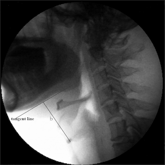
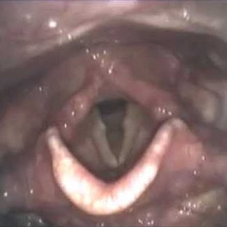

-
Recovery
Brunnstrom's Order of Recovery
1 Flaccidity (immediately after onset): no voluntary movement initiated 2 Spasticity: basic synergy patterns appear, minimal voluntary movement possible 3 Voluntary control over synergies: with increase in spasticity 4 Some movement patterns out of synergy can be mastered: synergy still predominates, decrease in spasticity 5 If progress continues, more complex movement combinations can be learned as basic synergies lose their dominance: more decrease in spasticity can be seen 6 Spasticity disappears: more individual joint movements and normal coordination 7 Normal function is restored Other Predictors of Revovery
Severity of UE weakness at onset (complete arm paralysis at onset has poor prognosis for recovery of useful hand function)
Timing of hand movement return (some motor recovery of hand by 4 weeks has 70% chance of making full/good recovery)
Poor prognosis: no measurable grasp by 4 weeks, severe proximal spasticity, prolonged flaccidity, late return of tapping response (facilitation)
-
Spasticity
Abnormal velocity-dependent resistance to passive movement of involved muscles at rest and posturing during ambulation or with noxious stimuli
Treatments
Non-invasive stretching splints, orthoses serial casting electrical stimulation cold modalities Chemo-
neurolysisBotulinum toxin
(useful in focal control of spasticity like at wrist and finger flexors or ankle invertors)Phenol/alcohol
(rarely used, limited by adverse effects like pain with injection, post-injection dysesthesia/chronic pain)Baclofen Oral Intrathecal baclofen pump:
some evidence that with physical therapy it can help improve walking speed/functional mobility in post-stroke spastic hemiplegiaSurgery may be useful in selected cases to improve function, hygiene, pain Note: side effects of medications (baclofen, benzodiazepines, clonidine, tizanidine) usually limit their usefulness in stroke patients
-
Dysphagia
Diagnostics
Bedside Swallow Evaluation (BSE)

minimally invasive, looking for overt cough or difficulty during swallowing trials, may evaluate gag reflex/pharyngeal sensation
Aspiration is missed on BSE 40-60% of the time (silent aspiration)
Predictors on BSE: abnormal cough, cough after swallow, dysphonia, dysarthria, abnormal gag reflex, voice change after swallow
Videofluoroscopic swallow study (VFSS)
aka modified barium swallow (MBS), gold standard for evaluation and treatment of dysphagia
Different amounts and consistencies of solids/liquids mixed with barium are swallowed while fluoroscopically visualizing the patient’s swallowing anatomy
Aspiration can be reliably diagnosed on a VFSS
Predictors of aspiration on VFSS: delayed initiation of swallow reflex or pharyngeal peristalsis
Fiberoptic endoscopic evaluation of swallowing (FEES)
a more comprehensive evaluation of the pharyngeal stage of swallowing
Observes natural bolus flow and containment vs potential bolus obstruction; reaction to presence of residue, penetration, aspiration; effectiveness of cough
-
Aphasia
Speech Component Impaired? Fluency Comprehension Repetition This describes:Global Aphasias List
Type Description Anomic temporoparietal injury, angular gyrus; may also see alexia or agraphia Conduction injury to parietal operculum (arcuate fasciculus), insula or deep to supramarginal gyrus (usually left side); literal paraphasias, targeting of words Transcortical sensory watershed lesion isolating Broca’s/Wernicke’s areas from posterior brain, angular gyrus or posterior-inferior temporal lobe; echolalia, neologisms Wernicke’s posterior superior temporal gyrus of dominant (usually left) hemisphere; marked paraphasias, neologisms, alexia and agraphia Transcortical motor frontal lobe, anterior/superior to Broca’s area or in the subcortical area deep to Broca’s area; reduced rate, initiation, organization of speech Broca’s posterior-inferior frontal lobe of dominant (usually left) hemisphere; telegraphic speech, paraphasias, articulatory errors or struggling Mixed transcortical
aka. isolation aphasia, lesions in borders of frontal, parietal, and temporal areas; decreased rate and initiation of speech, echolalia Global various sizes and locations but usually involves left MCA distribution; ranges from mutism to total repetitive jargon or neologistic output
-
References
Zorowitz RD, Baerga E, Cuccurullo SJ. Physical Medicine and Rehabilitation Board Review. 3rd ed. New York, NY: Demos Medical; 2015. Chapter 1, Stroke. P.41-95.
Harvey RL, Roth EJ, Yu DT, Celnik P, Braddom RL. Physical Medicine and Rehabilitation. 4th ed. Philadelphia, PA: W.B. Saunders Company; 2011. Chapter 50, Stroke Syndromes. P.1177-1222.
Twitchell TE. The restoration of motor function following hemiplegia in man. Brain. 1951;74:443–480.
Brunnstrom S. Motor testing procedures in hemiplegia: based on sequential recovery stages. Phys Ther. 1966;46:357–375.
Zhang J, Zhou Y, Wei N, Yang B, Wang A, Zhou H, et al. (2016) Laryngeal Elevation Velocity and Aspiration in Acute Ischemic Stroke Patients. PLoS ONE 11(9): e0162257. https://doi.org/10.1371/journal.pone.0162257